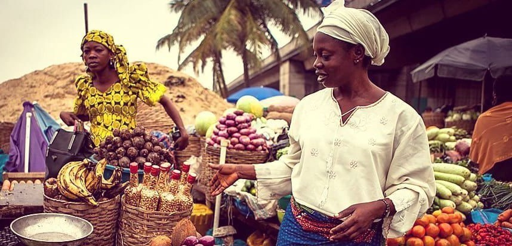

African Marketplace

Who We Are
We are an online marketplace for cross-border traders in Africa. We empower small business owners to legally, safely, and profitably trade without risks of harassment and vulnerability of corruption.
Our Goals
Our primary goal is to make it more efficient for small business owners, particularly women, in East African countries to turn their estabishments into economic opportunities to help them grow out of proverty.
We want to provide these entrepreneurs the tools to take the businesses they've built and show them that when the flow of information is open and available, the sky is the limit!
